Locații de nuntă în județul Sălaj
- locații în director
- 15
- cu cazare în registrul SITUR
- 1
- medie ponderată Google
- 4,3 / 5
- evaluări Google
- 4.693
Cum alegi unde mergi la vizionare
Jibou și Șimleu Silvaniei pot fi repere pentru vizionări, alături de adrese din Văleni sau Gâlgău. La o proprietate cu teren în pantă verificați în persoană locul exact pentru rândurile de scaune. Fotografiile panoramice spun puțin despre accesul până acolo.
La Casa Catrinei din Văleni, curtea apare în relatarea unui vizitator. Dacă ideea voastră este o masă lungă sub cerul liber, cereți gazdei să vă arate pe teren cât loc rămâne pentru servire de o parte și de alta. Pentru locațiile mai aproape de Jibou, adăugați pe hartă și locul cununiei civile înainte să rezervați orele pentru fotografii.
Două adrese pentru o zi de vizionări
Pe hartă, între aceste două proprietăți sunt 7,6 km în linie dreaptă. Deschide indicațiile de drum din fișe ca să vezi traseul pe șosea înainte de a stabili a doua întâlnire.
- Casa Catrinei · Principală nr. 120, 457103 Văleni
- Castel Haller · Comuna Gârbou
Explorează după localitate
Toate locațiile din județul Sălaj
Ordinea ține cont de nota Google și de numărul evaluărilor. Cum calculăm ordinea
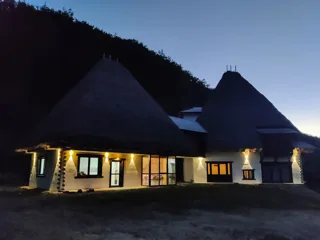
Fotografie a locației · Sursa fotografiei Văleni · Pensiune
Casa Catrinei
Pensiune în Văleni, Sălaj, cu ciubăr, piscină și curte pentru grătar, unde s-a ținut o cununie civilă. Salon de 10–12 persoane, nota 5.
Principală nr. 120, 457103 Văleni+40 750 266 678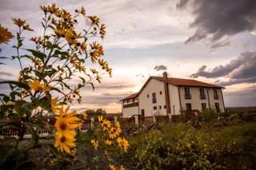
Fotografie a locației · Sursa fotografiei Sărmășag · Cazare
Pensiunea Sophia
Pensiunea Sophia, Sărmășag. Lacul apare în povestea lui ca motiv al deplasării, fără să rezulte că face parte din proprietatea pensiunii.
Sărmășag+40 757 548 653
Hartă ilustrată Zalău · Cramă
Crama Dacilor SRL, crama Sălaj crama Zalău coniac cognac vinars spumant șampanie
Crama Dacilor SRL, crama Sălaj crama Zalău coniac cognac vinars spumant șampanie figurează ca cramă în Zalău, Sălaj, la adresa Aleea Astrei 1.
Aleea Astrei 1, 450083 Zalău+40 740 402 335
Fotografie a locației · Sursa fotografiei Zalău · Hotel
Hotel Brilliant Meseș
Hotel Brilliant Meseș, Zalău. Este o referință pentru combinația dintre masă și cazare la aceeași adresă din Zalău.
Piața 1 Decembrie 1918 10A, 450041 Zalău+40 722 102 711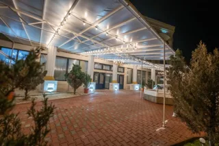
Fotografie a locației · Sursa fotografiei Zalău · Hotel
Grand Hotel Baroc
Hotel baroc în Zalău cu sală de evenimente lăudată de invitații la nunți, piscină interioară și terasă; muzica se aude până în camere.
Bulevardul Mihai Viteazul nr 119, 457105 Zalău+40 744 150 911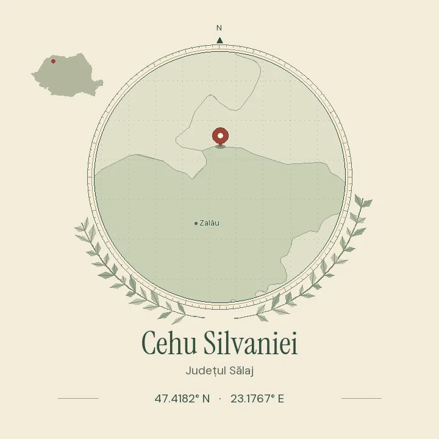
Hartă ilustrată Cehu Silvaniei · Cazare
Pensiune Panorama
Pensiune Panorama. La Panorama din Cehu Silvaniei, un călător descrie camere călduroase într-o zonă liniștită și posibilitatea de a lua micul dejun la pensiune.
Strada 1 Mai 69, 455100 Cehu Silvaniei+40 751 129 912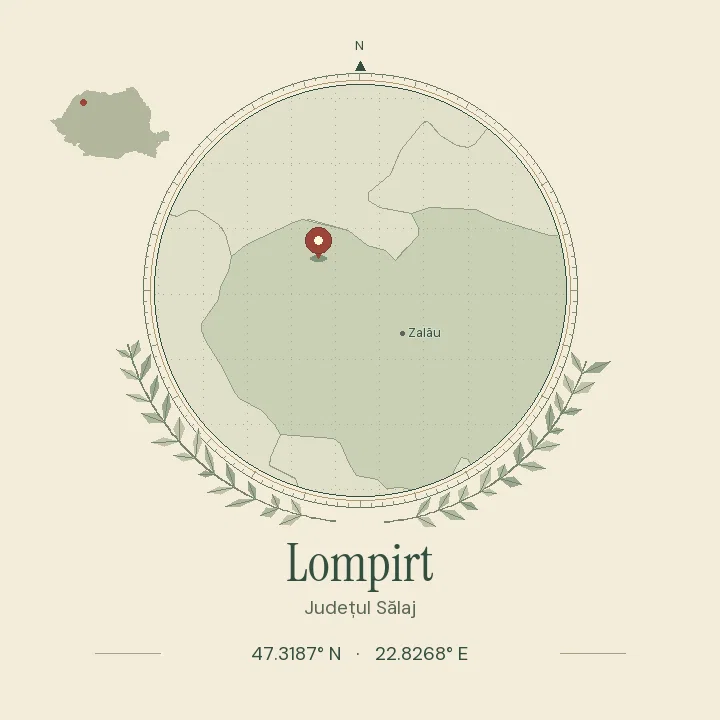
Hartă ilustrată Lompirt · Hotel
Pensiunea Silvania
Pensiunea Silvania. Un client care voia să cineze la Silvania a sunat înainte și a aflat că în după-amiaza respectivă era programat un eveniment.
Dealul cu vânt, 457332 Lompirt+40 771 408 651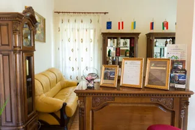
Fotografie a locației · Sursa fotografiei Șimleu Silvaniei · Cazare
Cabana Brădet
Salon de 200 de locuri, terasă și trei foișoare la Șimleu Silvaniei, dar recenzii din 2026 critice la servire. Ce să testezi la degustare.
Strada Brădet, 455300 Șimleu Silvaniei+40 260 677 600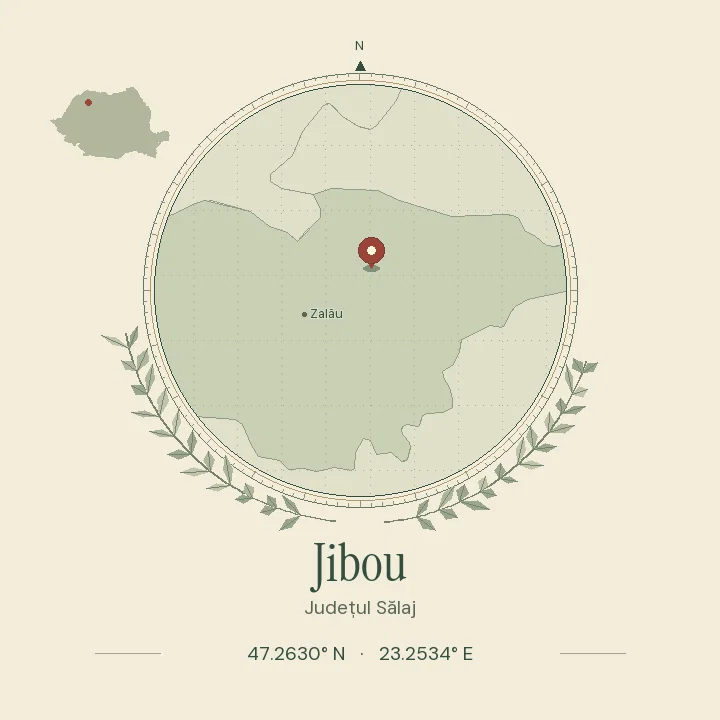
Hartă ilustrată Jibou · Castel
Ansamblul castelului Wesselényi
Palat baroc nerenovat în mijlocul grădinii botanice din Jibou: cerbi, nuferi și alei lungi. Ce spun vizitatorii și ce să întrebi pentru fotografii.
Strada Parcului 19, 455200 Jibou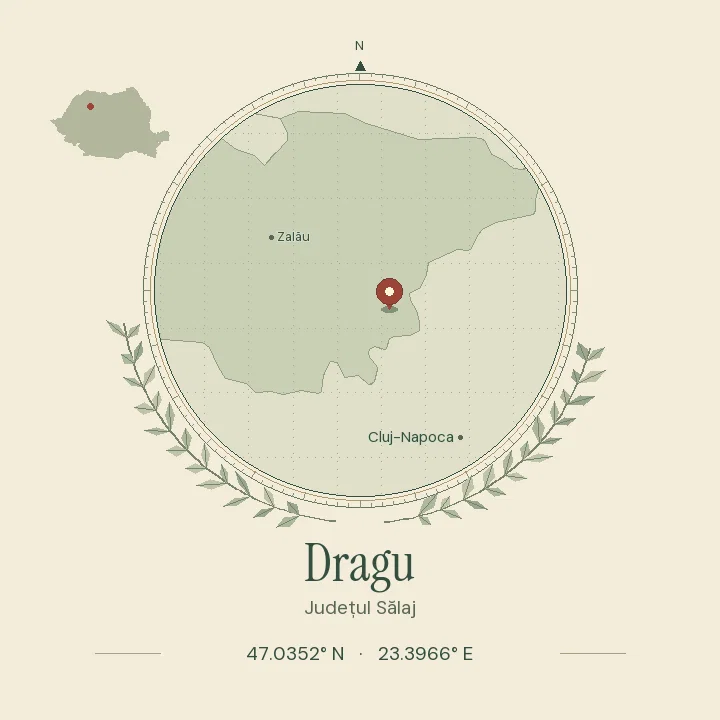
Hartă ilustrată Dragu · Castel
Castelul Bethlen
Ruina castelului Bethlen din Dragu, Sălaj: conac renascentist transformat în castel, acoperiș prăbușit și acces interior periculos, fără dotări.
Dragu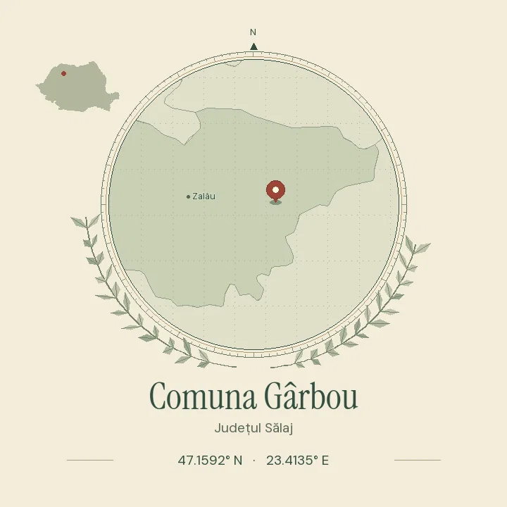
Hartă ilustrată Comuna Gârbou · Castel
Castel Haller
Ruinele castelului Haller din Gârbou, Sălaj: turn, fântână și alee cu castani, dar fără facilități. Ce să verifici înainte de o ședință foto.
Comuna Gârbou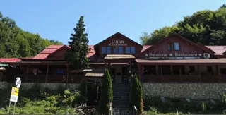
Fotografie a locației · Sursa fotografiei Gâlgău · Unitate de cazare rurală
Casa Someșeana
Restaurant cu cazare și piscine pe E58, la Gâlgău: 1.622 de evaluări, mămăligă cu jumări lăudată, sală de evenimente fără capacitate publicată.
E58 1, STR. PRINCIPALA NR. 1, 457140 Gâlgău+40 728 472 184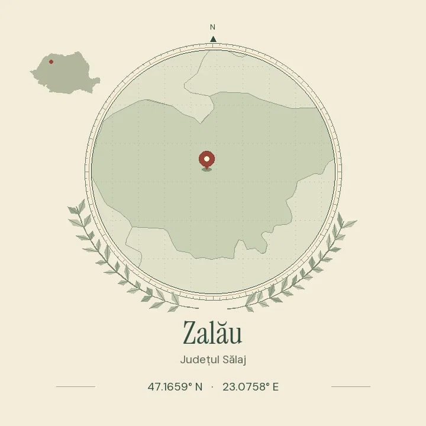
Hartă ilustrată Zalău · Hotel
Hotel Royal
O persoană cazată la Hotel Royal din Zalău povestește că a auzit zgomot de pe terasă până târziu și că geamurile camerei sale nu aveau plasă pentru insecte.
Strada Cetinei, Aleea Dealului 12, 450066 Zalău+40 260 606 061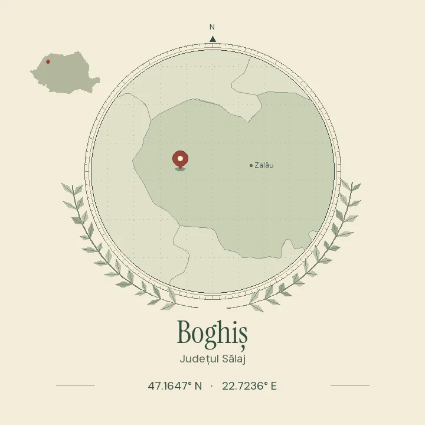
Hartă ilustrată Boghiș · Restaurant
Pensiunea Cetatea
Pensiunea Cetatea. La Boghiș, un oaspete de weekend pune în capul listei poziția pensiunii vizavi de băi și își amintește de mâncarea servită la fața locului.
457262 Boghiș
Hartă ilustrată Zalău · Hotel
Pensiunea La Grădina
Pensiunea La Grădina, Zalău. Un oaspete de la La Grădina din Zalău menționează că avea la dispoziție un frigider comun pe etaj.
Strada George Coșbuc 1C, 457246 Zalău+40 745 005 815
Întrebări despre locațiile din județul Sălaj
Unde pot dormi invitații în județul Sălaj?
În registrul de cazare SITUR găsim Pensiunea La Grădina (28 de locuri de cazare). Verifică ce camere sunt libere pentru noaptea evenimentului.
Ce proprietăți din județul Sălaj au grădină sau terasă?
Casa Catrinei (grădină, terasă); Pensiunea Sophia (terasă); Hotel Brilliant Meseș (grădină, terasă). Cere administratorului condițiile de folosire pentru o petrecere privată.
Care locație din județul Sălaj are cele mai multe evaluări Google?
Casa Someșeana are 1.622 de evaluări în profilul Google folosit la documentare. Evaluările acoperă și alte experiențe la proprietate, inclusiv vizitele fără eveniment.
Unde apare o intrare accesibilă în județul Sălaj?
Profilurile Google indică o intrare accesibilă la Ansamblul castelului Wesselényi. Pentru o cununie în exterior, cere detalii despre traseul dintre intrare și zona cu scaune.